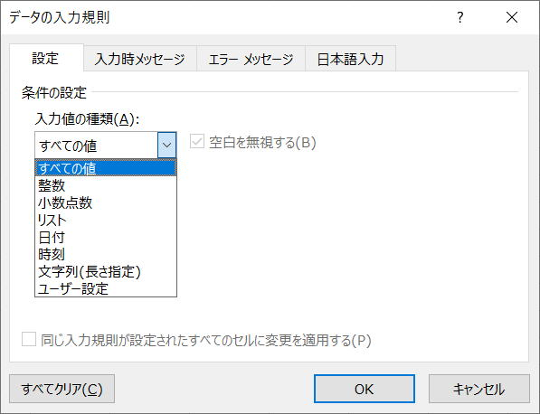

第126回.入力規則（Validation）

入力規則は、Validationオブジェクトになります、ワークシート範囲の入力規則を表します、
入力規則は、シート上で設定しておいた方が良い場合が多いですが、マクロVBAで設定する必要も出てきます。
Validationオブジェクトには、多数のプロパティがあり、その設定値を調べることはとても大変になります。
自動記録されたVBAコードを読む時の参考に、以下の一覧をお使いください。
Validationオブジェクト
| Add | 指定された範囲に入力規則を追加します。 |
| Delete | オブジェクトを削除します。 |
| Modify | セル範囲のデータの入力規則を変更します。 |
| AlertStyle | 入力規則でのエラーのスタイルを返します。 値の取得のみ可能です。XlDVAlertStyle クラスの定数を使用します。 |
| Application | 対象となるオブジェクトが指定されない場合は、Excel アプリケーション (Application オブジェクト) を返します。 対象となるオブジェクトが指定された場合は、指定されたオブジェクトを作成した Application オブジェクトを返します。 OLE オートメーションを使っていて、オブジェクトのアプリケーションにアクセスするときなどに、このプロパティを使います。値の取得のみ可能です。 |
| Creator | 現在のオブジェクトが作成されたアプリケーションを示す 32 ビットの整数を取得します。 値の取得のみ可能です。 長整数型 (Long) の値を使用します。 |
| ErrorMessage | 入力規則でのエラー メッセージを設定します。値の取得および設定が可能です。 文字列型 (String) の値を使用します。 |
| ErrorTitle | 入力規則で発生するエラーでのダイアログ ボックスのタイトルを設定します。 値の取得および設定が可能です。文字列型 (String) の値を使用します。 |
| Formula1 | 条件付き書式または入力規則に使用されている値またはオブジェクト式を返します。 定数値、文字列値、セル参照、または数式を使用できます。値の取得のみ可能です。 文字列型 (String) の値を使用します。 |
| Formula2 | 条件付き書式または入力規則の 2 番目の部分に使用されている値またはオブジェクト式を返します。 Operator プロパティに xlBetween または xlNotBetween が設定されている場合にだけ、このプロパティを使用できます。 定数値、文字列値、セル参照、または数式を指定できます。値の取得のみ可能です。 文字列型 (String) の値を使用します。 |
| IgnoreBlank | True の場合、入力規則において特定のセル範囲への空白値の入力を許可します。 値の取得および設定が可能です。ブール型 (Boolean) の値を使用します。 |
| IMEMode | 日本語の入力規則の内容を設定します。 使用できる定数は、次に示す XlIMEMode クラスの定数のいずれかです。 値の取得および設定が可能です。 長整数型 (Long) の値を使用します。 |
| InCellDropdown | True の場合、入力規則で可能な値を含むドロップダウン リストを表示します。 値の取得および設定が可能です。 ブール型 (Boolean) の値を使用します。 |
| InputMessage | 入力規則での入力メッセージを設定します。 値の取得および設定が可能です。 文字列型 (String) の値を使用します。 |
| InputTitle | 入力規則ダイアログ ボックスのタイトルを設定します。 値の取得および設定が可能です。 文字列型 (String) の値を使用します。 |
| Operator | 入力規則の演算子を表す長整数型 (Long) の値を取得、または設定します。 |
| Parent | 指定されたオブジェクトの親オブジェクトを取得します。 値の取得のみ可能です。 |
| ShowError | True の場合、ユーザーが無効なデータを入力すると、入力規則でのエラー メッセージが必ず表示されます。 値の取得および設定が可能です。ブール型 (Boolean) の値を使用します。 |
| ShowInput | True の場合、ユーザーが入力規則のセル範囲を選択すると、入力規則での入力メッセージが必ず表示されます。 値の取得および設定が可能です。ブール型 (Boolean) の値を使用します。 |
| Type | セル範囲に設定されている入力規則の種類を表す長整数型 (Long) の値を返します。 XlDVType クラスの定数を使用します。 |
| Value | セル範囲に含まれるデータが入力規則に合った有効なデータであるかどうかを示すブール型 (Boolean) の値を取得します。 |
よく使い、使い方が難しいADDメソッドのみ掲載します。
| Type | 入力規則の種類を指定します。 |
| AlertStyle | 入力規則でのエラーのスタイルを指定します。 使用できる定数は、XlDVAlertStyle クラスの xlValidAlertInformation、xlValidAlertStop、xlValidAlertWarning のいずれかです。 |
| Operator | データ入力規則の演算子を指定します。 使用できる定数は、XlFormatConditionOperator クラスの xlBetween、xlEqual、xlGreater、xlGreaterEqual、xlLess、xlLessEqual、xlNotBetween、xlNotEqual のいずれかです。 |
| Formula1 | データ入力規則での条件式の最初の部分を指定します。 |
| Formula2 | データ入力規則での条件式の 2 番目の部分を指定します。 引数 Operator が xlBetween または xlNotBetween 以外の場合、この引数は無視されます。 |
入力規則（Validation）の使用例
| A | B | C | D |
| 設定する入力規則 | ここに設定 | 関東地方 | |
| 1～12の整数 | 東京都 | ||
| 1以上の整数 | 神奈川県 | ||
| 最大10文字 | 埼玉県 | ||
| ひらがな入力 | 千葉県 | ||
| 半角のみ入力 | 茨城県 | ||
| 男,女のリスト | 栃木県 | ||
| 関東地方のリスト、他は入力不可 | 群馬県 | ||
| 関東地方のリスト、他は注意表示 |
'1～12の整数
With Range("B2").Validation
.Delete
.Add Type:=xlValidateWholeNumber, AlertStyle:=xlValidAlertStop, Operator:=xlBetween, Formula1:="1", Formula2:="12"
End With
'1 以上の整数
With Range("B3").Validation
.Delete
.Add Type:=xlValidateWholeNumber, AlertStyle:=xlValidAlertStop, Operator:=xlGreaterEqual, Formula1:="1"
End With
'最大10文字
With Range("B4").Validation
.Delete
.Add Type:=xlValidateTextLength, AlertStyle:=xlValidAlertStop, Operator:=xlLessEqual, Formula1:="10"
End With
'ひらがな入力
With Range("B5").Validation
.Delete
.Add Type:=xlValidateInputOnly, AlertStyle:=xlValidAlertStop, Operator:=xlBetween
.IMEMode = xlIMEModeHiragana
End With
'半角のみ入力
With Range("B6").Validation
.Delete
.Add Type:=xlValidateInputOnly, AlertStyle:=xlValidAlertStop, Operator:=xlBetween
.IMEMode = xlIMEModeDisable
End With
'男 , 女のリスト
With Range("B7").Validation
.Delete
.Add Type:=xlValidateList, AlertStyle:=xlValidAlertStop, Operator:=xlBetween, Formula1:="男,女"
End With
'関東地方のリスト､他は入力不可
With Range("B8").Validation
.Delete
.Add Type:=xlValidateList, AlertStyle:=xlValidAlertStop, Operator:=xlBetween, Formula1:="=$D$1:$D$8"
End With
'関東地方のリスト､他は注意表示
With Range("B9").Validation
.Delete
.Add Type:=xlValidateList, AlertStyle:=xlValidAlertWarning, Operator:=xlBetween, Formula1:="=$D$1:$D$8"
End With
以上のように、Addに先だって、Deleteをするようにして下さい。
入力規則を設定しても無効データが入力されてしまう場合への対処
以下の場合には入力規則に反するデータが入力されてしまいます。
・値貼り付け
・右クリックから「ドロップダウンリストから選択」
これには、ワークシートのイベントを使うことで対処できます。
第124回.Workbookのイベントプロシージャー
Private Sub Worksheet_Change(ByVal Target As Range)
If Target.Validation.Value = False Then
MsgBox "入力規則に無効データが入力されました。" & vbLf & _
"入力データを元に戻します。"
Application.Undo
End If
End Sub
ブック内のすべてのシートで実装する場合は、ThisWorkbookモジュールに以下を追加してください。
Private Sub Workbook_SheetChange(ByVal Sh As Object, ByVal Target As Range)
If Target.Validation.Value = False Then
MsgBox "入力規則に無効データが入力されました。" & vbLf & _
"入力データをもとに戻します。"
Application.Undo
End If
End Sub
実際にはこのようなイベントを入れることよりも、ユーザーに説明しておくことを優先すべきですが、
とはいえ、
ついうっかりと言うのもありますので、念の為に入れておくことも考えるべきでしょう。
同じテーマ「マクロVBA入門」の記事
第89回.オートフィルタｰ（AutoFilter）
第90回.フィルターオプションの設定（AdvancedFilter）
第91回.条件付き書式（FormatCondition）
第126回.入力規則（Validation）
第92回.名前定義（Names）
第93回.ピボットテーブル（PivotTable）
第94回.コメント（Comment）
第95回.ハイパーリンク（Hyperlink）
第96回.グラフ（Chart）
第97回.図形オートシェイプ（Shape）
第136回.フォームコントロール
新着記事NEW ・・・新着記事一覧を見る
VBA100本ノック 100本目：WEBから100本ノックのリストを取得｜VBA練習問題（3月3日）
VBA100本ノック 99本目：自動席替え（行列と前後左右が全て違うように）｜VBA練習問題（3月2日）
VBA100本ノック 98本目：席替えルールが守られているか確認｜VBA練習問題（3月1日）
VBA100本ノック 97本目：Accessデータを取得（グループ集計）｜VBA練習問題（2月27日）
VBA100本ノック 96本目：Accessデータを取得（マスタ結合&抽出）｜VBA練習問題（2月26日）
VBA100本ノック 95本目：図形のテキストを検索するフォーム作成｜VBA練習問題（2月24日）
VBA100本ノック 94本目：表範囲からHTMLのtableタグを作成｜VBA練習問題（2月23日）
VBA100本ノック 93本目：複数ブックを連結して再分割｜VBA練習問題（2月22日）
VBA100本ノック 92本目：セルの色を16進で返す関数｜VBA練習問題（2月20日）
VBA100本ノック 91本目：時間計算（残業時間の月間合計）｜VBA練習問題（2月19日）
アクセスランキング ・・・ ランキング一覧を見る
1.最終行の取得（End,Rows.Count）｜VBA入門
2.RangeとCellsの使い方｜VBA入門
3.変数宣言のDimとデータ型｜VBA入門
4.マクロって何？VBAって何？｜VBA入門
5.Range以外の指定方法（Cells,Rows,Columns）｜VBA入門
6.セルのコピー&値の貼り付け（PasteSpecial）｜VBA入門
7.繰り返し処理（For Next)｜VBA入門
8.セルに文字を入れるとは（Range,Value）｜VBA入門
9.マクロはどこに書くの（VBEの起動）｜VBA入門
10.とにかく書いてみよう（Sub,End Sub）｜VBA入門
このサイトがお役に立ちましたら「シェア」「Bookmark」をお願いいたします。
記述には細心の注意をしたつもりですが、
間違いやご指摘がありましたら、「お問い合わせ」からお知らせいただけると幸いです。
掲載のVBAコードは動作を保証するものではなく、あくまでVBA学習のサンプルとして掲載しています。
掲載のVBAコードは自己責任でご使用ください。万一データ破損等の損害が発生しても責任は負いません。